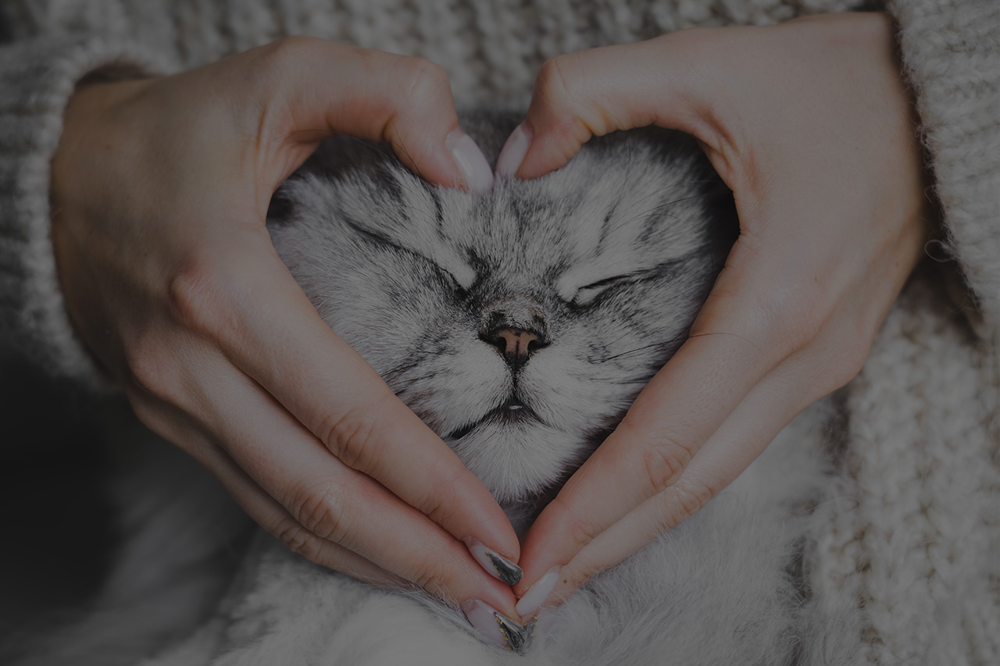
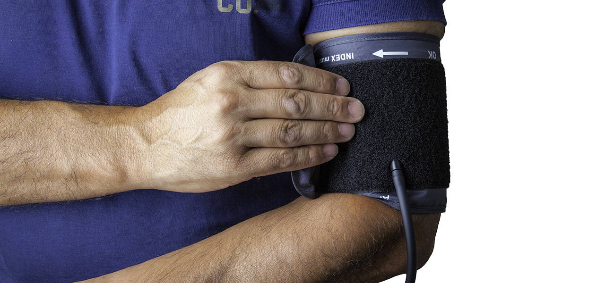

Photo Credit: Adobe Stock
The Quiet Comfort that makes a lasting difference.
Therapy cats can support the overall well-being by helping people feel more calm and at ease. Their presence often brings comfort and can gently improve mood and emotional balance. They can also encourage connection and interaction, making social environments feel more welcoming and less isolating.
Photo Credit: Pixabay
Therapy cats help reduce anxiety, ease symptoms of depression and provide a sense of comfort during stressful moments.
Photo Credit: Pixabay
Interacting with a cat can bring comfort, lightness, and even moments of joy during difficult times.
Photo Credit: Pixabay
Therapy cats provide a sense of companionship and security, which can be especially helpful for people experiencing loneliness or grief.
Therapy cats can positively affect the body by lowering cortisol levels while increasing oxytocin, helping reduce stress and promote a sence of calm. Interactingwith them can also lower heart rate and blood pressure, allowing the body to shift out of a heightened stress response. Simple actions like petting a cat or hearing it purr can encourage relaxation and more steady breathing.

Photo Credit: Pixabay
"The presence of a cat or petting a cat can reduce heart rate and both systolic and diastolic blood pressure."
-Dinis, F.A.B.S.G, & Martins. T.L.F., People and Animals: The International Journal of Research and Practice
Discover the science behind therapy cats and explore how their presence can support emotional and physical well-being.